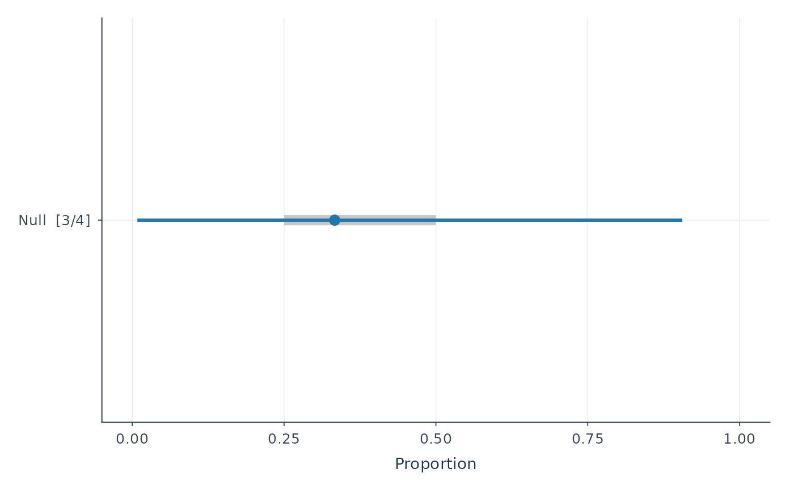
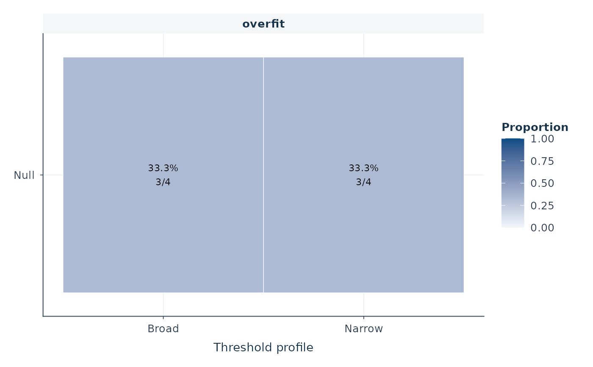

Evaluate screening outcomes against a planned simulation roster
Source:R/api-screening-performance.R, R/api-screening-sensitivity.R
mfrm_screening_performance.RdIn a simulation where the true problem status is known, summarize how often a warning rule detects affected raters or flags unaffected raters. Supply the planned trials and observed flags; this function does not generate or fit simulated ratings. Unknown truth in real ratings cannot supply these rates. Unavailable screens remain unavailable, and correlated raters are not counted as independent simulation trials.
See how detection and false-flag rates change when you change fit-screening thresholds in a simulation with known truth. Apply specified mean-square bands to saved Infit/Outfit values without refitting models. Keep underfit, overfit and their union separate. Here sensitivity analysis means comparing thresholds; the reported Sensitivity rate means detecting an affected target.
Usage
mfrm_screening_performance(roster, results, rule, level = 0.95)
mfrm_screening_sensitivity(
roster,
measures,
thresholds,
rule,
statistic = c("either", "infit", "outfit"),
zstd_cut = NULL,
level = 0.95
)
# S3 method for class 'mfrm_screening_performance'
summary(object, ...)
# S3 method for class 'mfrm_screening_performance'
print(x, ...)
# S3 method for class 'mfrm_screening_performance'
plot(
x,
scope = c("family", "target"),
metric = c("false_flags", "detection"),
condition = NULL,
draw = TRUE,
...
)
# S3 method for class 'mfrm_screening_sensitivity'
summary(object, ...)
# S3 method for class 'mfrm_screening_sensitivity'
print(x, ...)
# S3 method for class 'mfrm_screening_sensitivity'
plot(
x,
style = c("tiles", "curves"),
direction = "either",
metric = c("false_flags", "detection"),
condition = NULL,
quantity = c("rate", "unavailable"),
draw = TRUE,
palette = c("accessible", "mono"),
title = NULL,
caption = NULL,
show_title = FALSE,
show_notes = FALSE,
show_labels = TRUE,
text_scale = 1,
point_size = 2.5,
...
)Arguments
- roster
Data frame with
Condition,Replicate,Targetidentifiers and logicalAffected:TRUEdenotes the prespecified departure that the screen is intended to detect. Include every planned target and replication, including failed runs. Within a condition, use the same targets and truth labels in every replication. Put different designs or methods in separate conditions. Identifiers are matched exactly as character labels.- results
Data frame with the same three identifier columns and logical
Flag(TRUE,FALSEorNA). Omitted result rows remain unavailable. Extra or duplicate keys are refused. Additional columns are retained in the source results, for example numerical status and failure messages.- rule
Nonempty description of the prespecified screen, including its thresholds, comparison family and any selection/refitting procedure.
- level
Confidence level for exact binomial Monte Carlo intervals; default 0.95. These describe simulation uncertainty, not an interval for rater severity or a guarantee of screening accuracy.
- measures
Data frame with
Condition,Replicate,Target,InfitandOutfit. IncludeInfitZSTDandOutfitZSTDwhen requesting the combined ZSTD rule. The selected statistic's columns are required; nonfinite values and omitted rows remain unavailable. Additional source columns, such as numerical readiness, are retained without filtering.- thresholds
Data frame with unique nonempty
Profilelabels and numericLower,Upperbounds satisfying0 < Lower < Upper. Profiles are compared in supplied order, without selecting an optimum.- statistic
"either"(default) flags Infit OR Outfit;"infit"or"outfit"uses only the specified index.- zstd_cut
NULL(default) uses only mean squares. A positive finite number adds directional ZSTD flags with inclusive boundaries. This is an explicit alternative rule, not a significance calibration. Record the chosen df convention and residual definition inrule.- object
An
mfrm_screening_sensitivityobject.- ...
-
For
summary.mfrm_screening_sensitivity(): Unused by print and summary.For
plot(): Unused. - x
-
Output from
mfrm_screening_sensitivity().Also for
summary(): Anmfrm_screening_sensitivityobject. - scope
"family"(default) shows any-flag events once per replication;"target"shows each individual target separately.- metric
"false_flags"or"detection"chooses the family event.- condition
Optional condition labels to display.
- draw
Logical;
FALSEreturns theggplotobject without opening a device.- style
"tiles"shows a labelled rate matrix."curves"shows profile comparisons with pointwise Monte Carlo intervals by condition.- direction
One or more of
"either","underfit","overfit".- quantity
"rate"(default) or"unavailable", the proportion of planned family events whose outcome is unresolved.- palette
"accessible"uses a sequential blue scale for tiles and blue/orange/purple lines with different symbols."mono"uses greys.- title
NULLuses the default text; a string replaces it;""removes it. Interpretation notes remain in the saved plot data.- caption
NULLuses the default text; a string replaces it;""removes it. Interpretation notes remain in the saved plot data.- show_title
Show the title and caption, respectively.
FALSEhides text without deleting its metadata.- show_notes
Show the title and caption, respectively.
FALSEhides text without deleting its metadata.- show_labels
Show percentages and known/planned counts in tiles.
- text_scale
Positive multiplier for text size.
- point_size
Positive point size in ggplot millimetres; base graphics use the corresponding relative size (2.5 is the default).
Value
An mfrm_screening_performance object with by_target, by_family,
aligned outcomes, replication-level family_outcomes, the original
roster and results, and settings. Tables retain full precision.
Planned, Available, Unavailable and Positive give denominators and
counts. Rate and MCSE condition on available outcomes; MCLower and
MCUpper are exact binomial bounds. AllTrialsLower and AllTrialsUpper
bound the realized proportion across all planned trials by assigning every
unknown outcome negative or positive. These latter bounds are not confidence
intervals. A family with no relevant targets has zero planned trials and
undefined rates. CompleteScreens counts fully observed families.
An mfrm_screening_sensitivity object with by_target, by_family,
aligned outcomes, replication-level family_outcomes, source roster
and measures, thresholds and settings. Each result table identifies
Profile, Lower, Upper and Direction; the remaining columns have
the meanings documented by mfrm_screening_performance().
For plot(): Invisibly, a ggplot object. Use plot_data() to inspect
underlying tables and notes.
For plot(): Invisibly, a ggplot object carrying exact selected tables, settings,
notes, and alternative text accessible via plot_data().
Details
A target's rate is sensitivity when Affected = TRUE and a false
flag rate when Affected = FALSE. The family summaries count whether any
unaffected target was flagged, and whether any affected target was flagged,
once per replication. They do not pool all raters into a binomial sample.
An observed positive makes an any-flag event known even if another target
is unavailable. Without a positive, any unavailable member leaves the event
unknown; only a complete negative family establishes no flag.
Replications must be independent and identically generated within each condition for the binomial uncertainty calculation. Pairing conditions does not invalidate their separate intervals, but a comparison between paired conditions needs its own paired analysis. Zero observed false flags does not imply a zero population probability: the exact upper bound stays positive. Conditional rates may be biased for the intended all-trial rate if failures depend on outcomes. Inspect availability and all-trial bounds together.
This helper neither creates flags nor establishes their validity. A severity difference alone is not rater misfit. Known simulation truth is required; labeling unknown real-world rater quality does not create a validation study. Define computable screening output separately from formal inference eligibility. The recorded rule cannot prove that it was selected before seeing outcomes.
Mean-square boundaries are strict: equality is inside the band.
Missing values use three-valued logic: TRUE OR NA is TRUE, but FALSE OR NA
is NA. The family event counts any affected or any unaffected target once
per independent replication. Correlated raters are not independent trials.
The source roster fixes truth and planned denominators for every profile.
Affected denotes the departure of interest; when comparing directional
screens, an affected-target flag can have the wrong direction for that
departure. Inspect directions together, not just the union's sensitivity.
Thresholds are review heuristics, not universal error-controlled tests. A low mean square describes low residual variability, not poor rater quality or proof of misconduct. ZSTD is sensitive to sample size and its df convention. Selecting a threshold on these results and reporting its same- sample performance is optimistic; use a separately designed validation. Pointwise Monte Carlo intervals are not simultaneous across profiles or conditions. Their overlap is not a paired test of rules applied to the same replications. No automatic exclusion or refitting is performed.
This helper does not qualify the supplied statistics. In particular, ordinary Rasch bands must not be transferred to extended-model posterior- predictive residual summaries that lack the same reference distribution.
plot() method: Plot screening performance and unresolved outcomes
For plot(): Blue points and whiskers show conditional rates and their exact
binomial Monte Carlo intervals. Gray segments bound the realized all-trial
proportion by assigning unresolved outcomes negative or positive; these
are not confidence intervals. A row with no known outcomes has no point
estimate. Right-hand counts show available/planned events. No model is
fitted and no threshold is selected by this plot.
plot() method: Plot directional screening rates across threshold profiles
For plot(): Tile shading is supplemented by numeric labels; missing estimates
are labelled NA. Profile order is supplied order, not an optimized ranking.
Curves connect discrete profile choices, not a continuous threshold scale.
Tile plots do not display uncertainty intervals: consult the retained table
or curve view. Exact intervals are pointwise and conditional on known
outcomes; all-trial bounds are retained, not confidence intervals.
References
Morris, T. P., White, I. R. and Crowther, M. J. (2019). Using simulation studies to evaluate statistical methods. Statistics in Medicine, 38, 2074–2102. doi:10.1002/sim.8086 .
Linacre, J. M. (2003). Size vs. significance: standardized chi-square fit statistic. Rasch Measurement Transactions, 17(1), 918. https://www.rasch.org/rmt/rmt171n.htm.
See also
mfrm_screening_sensitivity() for several threshold bands,
evaluate_mfrm_signal_detection(), facet_quality_dashboard()
fit_measures_table(), mfrm_screening_performance()
Examples
roster <- expand.grid(Condition = "Null", Replicate = 1:4,
Target = c("R1", "R2"), stringsAsFactors = FALSE)
roster$Affected <- FALSE
results <- roster[c("Condition", "Replicate", "Target")]
results$Flag <- c(FALSE, TRUE, FALSE, NA, FALSE, NA, FALSE, NA)
performance <- mfrm_screening_performance(roster, results,
rule = "Infit or Outfit outside [0.5, 1.5]; both raters; no exclusion/refit")
summary(performance)
#> $by_target
#> Condition Target Affected Metric Planned Available Unavailable
#> 1 Null R1 FALSE False flag rate 4 3 1
#> 2 Null R2 FALSE False flag rate 4 2 2
#> Positive Rate MCSE MCLower MCUpper AllTrialsLower
#> 1 1 0.3333333 0.2721655 0.008403759 0.9057007 0.25
#> 2 0 0.0000000 0.0000000 0.000000000 0.8418861 0.00
#> AllTrialsUpper
#> 1 0.5
#> 2 0.5
#>
#> $by_family
#> Condition Metric Targets CompleteScreens Planned
#> 1 Null Any unaffected target flagged 2 2 4
#> 2 Null Any affected target flagged 0 0 0
#> Available Unavailable Positive Rate MCSE MCLower MCUpper
#> 1 3 1 1 0.3333333 0.2721655 0.008403759 0.9057007
#> 2 0 0 0 NA NA NA NA
#> AllTrialsLower AllTrialsUpper
#> 1 0.25 0.5
#> 2 NA NA
#>
#> $settings
#> $settings$rule
#> [1] "Infit or Outfit outside [0.5, 1.5]; both raters; no exclusion/refit"
#>
#> $settings$level
#> [1] 0.95
#>
#> $settings$uncertainty_unit
#> [1] "Independent simulation replication within condition"
#>
#>
plot(performance)

roster <- expand.grid(Condition = "Null", Replicate = 1:4,
Target = c("R1", "R2"), stringsAsFactors = FALSE)
roster$Affected <- FALSE
measures <- roster[c("Condition", "Replicate", "Target")]
measures$Infit <- c(.45, .8, 1.1, NA, .9, 1.4, 1.2, NA)
measures$Outfit <- measures$Infit
bands <- data.frame(Profile = c("Broad", "Narrow"),
Lower = c(.5, .7), Upper = c(1.5, 1.3))
sensitivity <- mfrm_screening_sensitivity(roster, measures, bands,
rule = "Illustrative fixed-rater residual screen; no exclusion/refit")
plot(sensitivity, direction = "overfit")
